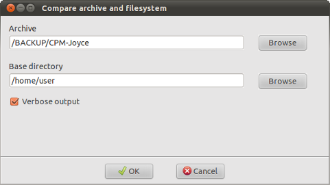

| Prev | Home | Next |
Comparing an archive's contents against the filesystem allows you to check whether the filesystem has changed since the archive was created. Any files which are different from those in the archive will be shown in the message window.
To diff an archive, select Archive->Compare files from the main menu and a dialog window will appear.
Archive - use the "Browse" button to select the archive containing the files to be compared with the filesystem. If an archive is open then its name will be entered here automatically.
Base directory - use the "Browse" button to select the filesystem directory containing the files to be compared with the archive. This is normally the base directory used when creating the archive. A future version of DarGUI will be able to enter this automatically for archives created using DarGUI.
Verbose output - if this option is selected then Dar will list every file checked and its status which wil be one of
If this option is not selected then there will be no output until the comparison is complete. Dar will then give a summary of the results.
When the terminal window displaying the Dar output is closed, DarGUI will give a graphical report of the results.
| Prev | Home | Next |
| Isolating catalogs | Up | Testing archive integrity |